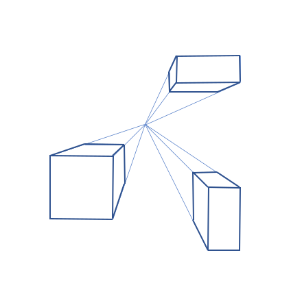
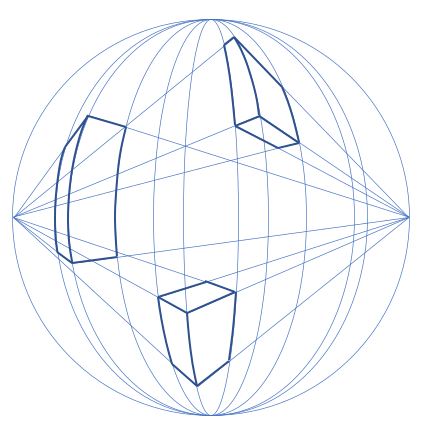
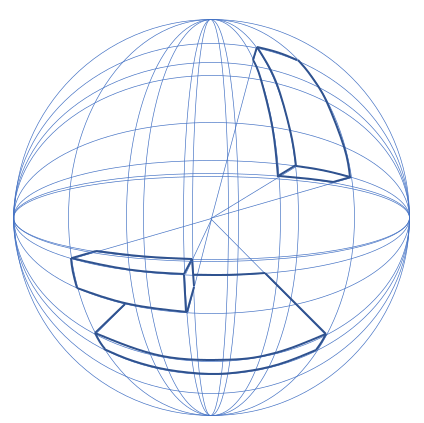

How to draw 6-point perspective
In this blogpost, we will learn how to understand and draw in a 6-point perspective. We begin with a drawing using a single vanishing point and iteratively add vanishing points until we have reached the 6-point perspective.

In one-point perspective, lines converge to a single vanishing point on the horizon. This vanishing point represents the point at which objects appear to vanish into the distance when viewed from a direct, head-on angle.

Two-point perspective introduces two vanishing points, each located on the horizon line. One vanishing point governs the convergence of lines on the left side of the scene, while the other does so for the right side. This technique is commonly used for depicting objects or scenes viewed from a corner or angled perspective.

Moving beyond the simplicity of two-point perspective, three-point perspective incorporates a third vanishing point. In addition to the two vanishing points on the horizon line, a third vanishing point is situated either above or below the horizon line. This third point governs the convergence of vertical lines, adding depth to the scene and allowing for the portrayal of tall structures or scenes with significant vertical elements.

Four-point perspective expands the horizon by adding vanishing points positioned above and below the scene. These additional vanishing points govern the convergence of lines in the vertical plane, enabling artists to depict scenes with extreme foreshortening or complex spatial distortions.

In five-point perspective, one more vanishing point is introduced, extending the manipulation of the center. This additional points allow for even greater control over perspective, enabling artists to create scenes with heightened realism or fantastical distortion.

The final frontier of perspective drawing, six-point perspective, pushes the boundaries by introducing a unique concept: the circular vanishing point [2]. Rather than a single point in space, the entire circumference of a circle serves as the vanishing point.

This circular vanishing point enables artists to depict scenes with spherical or cylindrical distortion, opening up new avenues for creative expression.
Literature
[1] Dick Termes. About 6 point perspective. Link.
[2] Michal Orlowski. How to draw a street in 6 point perspective. Link.
[3] Massimo N. Marrazzo. How to draw curvilinear perspective. Link.
[4] Araújo AB. Ruler, compass, and nail: constructing a total spherical perspective. Journal of Mathematics and the Arts. 2018 Jul 3;12(2-3):144-69. Link.
Institute of
Environmental Systems Sciences
Merangasse 18,
8010 Graz
Environmental Systems Sciences
Merangasse 18,
8010 Graz
daniel.reisinger@uni-graz.at